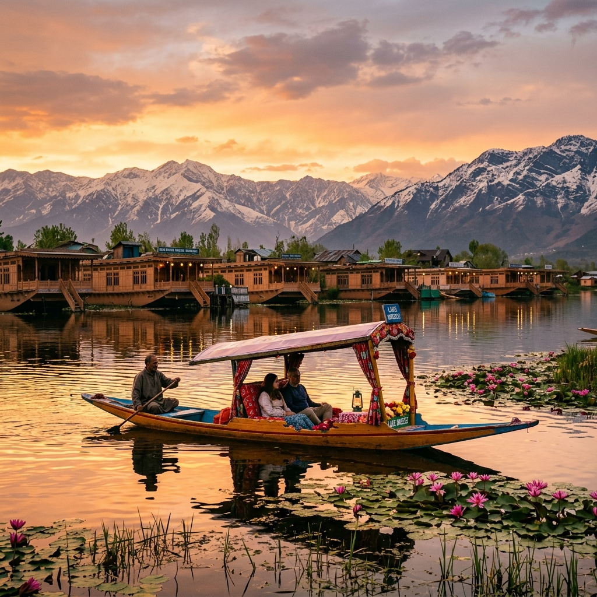

Paradise on Earth — Where Heaven Meets the Himalayas
Apr — Oct
₹7,000 — ₹25,000
Kashmiri, Urdu, Hindi
Srinagar (SXR)
The iconic jewel of Kashmir — glide across the serene lake on a wooden Shikara boat past floating gardens, vibrant lotus fields, and luxurious houseboats. A sunrise here is utterly unforgettable.
Asia's premier ski resort and home to one of the world's highest gondola rides. In winter it's a snow paradise; in summer, a stunning meadow blanketed in wildflowers with panoramic Himalayan views.
The Valley of Shepherds — a breathtaking highland valley along the Lidder River. Base camp for the sacred Amarnath Yatra and gateway to gorgeous meadows like Baisaran (Mini Switzerland).
Asia's largest tulip garden, nestled at the foothills of the Zabarwan range overlooking Dal Lake. Over 1.5 million tulips bloom in spectacular colours every spring (March–April).
Kashmir is world-famous for its Pashmina shawls, hand-knotted carpets, Papier-mâché art, and walnut wood carvings. The old bazaars of Srinagar are a treasure trove of artisanal beauty.
Savour the legendary Wazwan — a multi-course feast featuring Rogan Josh, Yakhni, Gushtaba, and Kahwa tea. Kashmir's food is as rich and layered as its culture and history.
Let our AI help you create the perfect Kashmir itinerary within your budget.